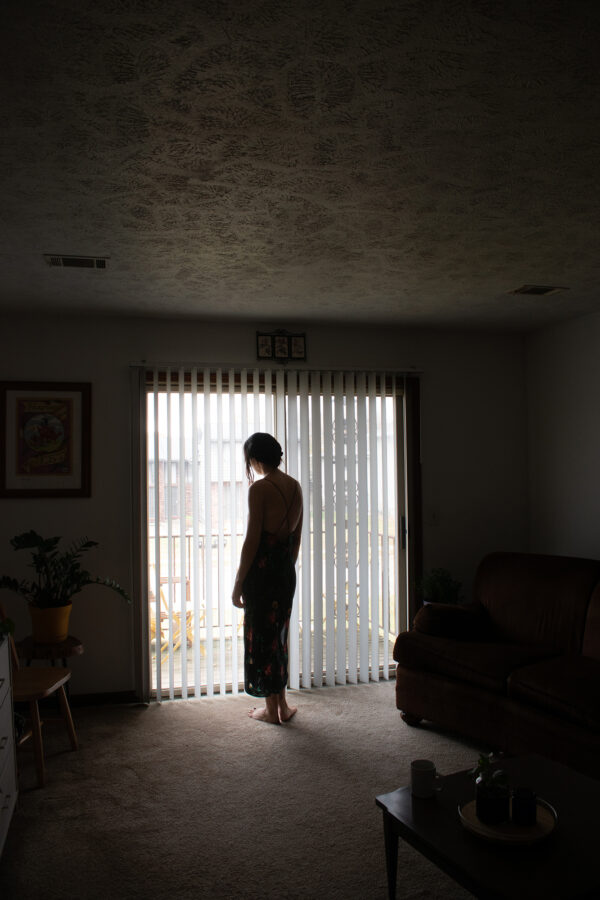

Lucy Dolan: THIRTY-TWO
McHenry County College is excited to present Lucy Dolan’s solo exhibition of photography, “THIRTY-TWO.”
February 23 – March 27, 2026
McHenry County College | Epping Gallery
8900 U.S. Highway 14, Crystal Lake, IL 60012 ──────────────────────
ARTIST STATEMENT
This exhibit is a reflection of my journey through difficult times toward healing and a healthier mindset. The works presented here are an exploration of my evolving relationship with nature and my body, two forces that have been integral to my recovery.
Each piece symbolizes a step in the process of reclaiming my mental and emotional well-being, as I sought refuge, strength, and understanding in the natural world. Nature has been my guide, its cycles of growth, decay, and renewal mirroring my own transformation.
The journey from struggle to wellness is not linear, and neither are these pieces. They represent both the complexities and simplicity of recovery, the moments of breakthrough and the times of quiet reflection. This exhibit is not just a representation of the past but a celebration of the present moment, where I stand today, more in tune with myself, my body, and the natural world that grounds me.